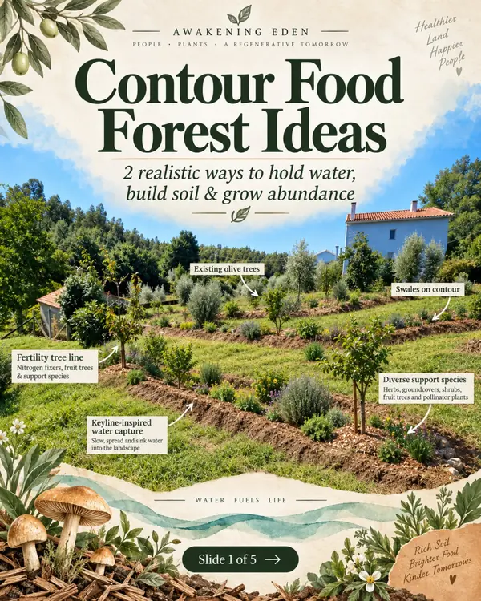
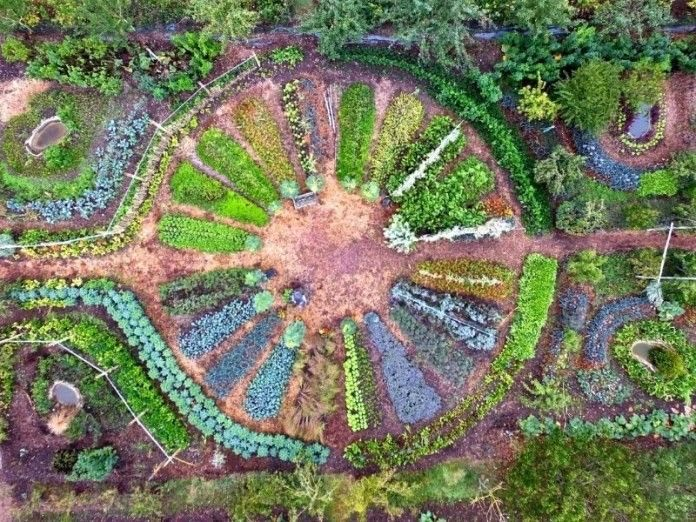
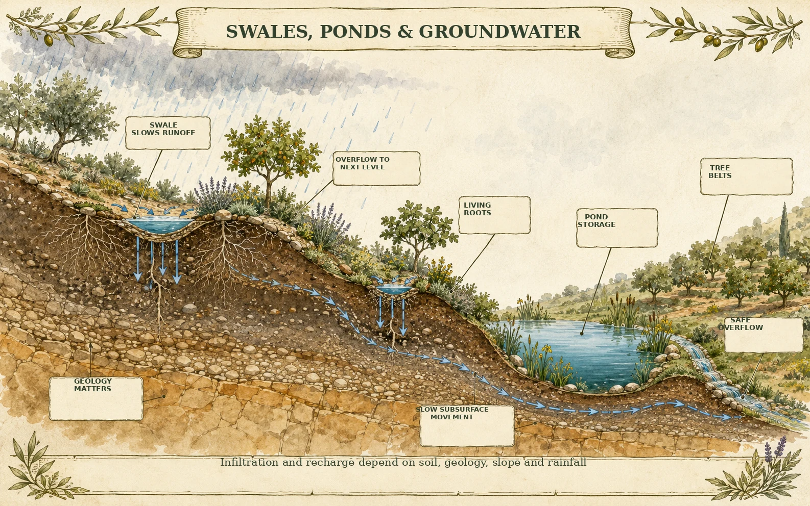
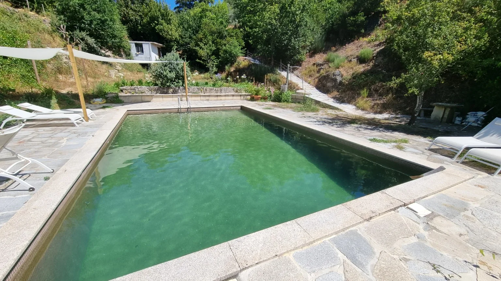
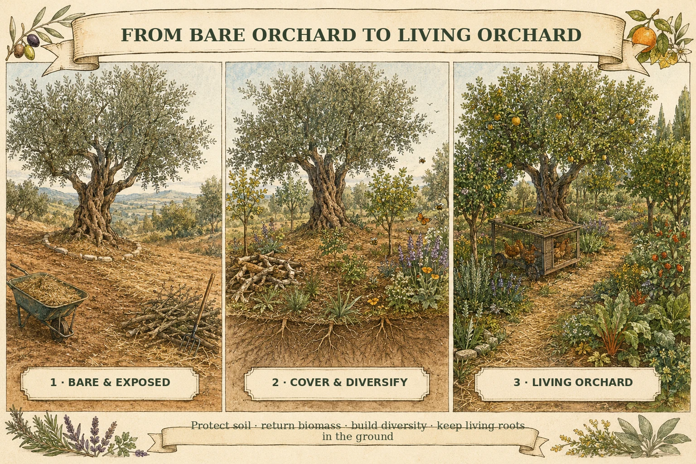

Backyard Eden
A compact edible garden or young food forest with a clear first phase.
€3,500–€6,000Indicative establishment rangeRegenerative projects · learning · collaboration
From tired orchards and bare ground to living soil, abundant gardens, food forests and beautiful places where people and ecosystems can thrive together.
For landowners, farms, retreats, schools, communities and aligned organisations: bring us your place, your questions and the change you long to see. We shape a practical regenerative first phase with the people the work needs.
Community gardens · syntropic food forests · raised beds + edible gardens · whole-property design + project management
Start with a real conversation. Scope, specialist support and delivery are agreed clearly before any work begins.

The problems are real.
So are the solutions.
So are the people creating them.
A clear invitation
We help make regeneration visible, workable and shared—so a place or project can move from scattered possibility to a coherent first phase.
That can mean a land and water reading, a food-growing or orchard strategy, a practical workshop, project coordination, a learning event or bringing in the specialist knowledge a project needs. We do not sell a one-size-fits-all blueprint. We listen first, work with site conditions and stay honest about what requires qualified professional input.
Grow abundance





Think whole landscape






These are examples of real work, collaborations, concepts and the kinds of systems we can help bring together.
Eden Sanctuary Gardens
From a small edible garden to a regenerative sanctuary, we shape food, water, soil, habitat and beauty around your land, budget and vision. Start with your dream and a few photographs; the full Eden Sanctuary Garden collection lives with Benjy’s direct land services.
A compact edible garden or young food forest with a clear first phase.
€3,500–€6,000Indicative establishment rangeLayered food-forest rows, biomass, productive planting and ongoing care.
€7,500–€15,000+Indicative establishment rangeA larger landscape, retreat or shared growing place, designed around its real conditions.
Custom scopeExplore all seven examples with BenjyPlant size, irrigation, soil preparation, mulch, access, machinery and the way you want to participate shape each proposal. Major infrastructure and extensive earthworks are scoped separately.
For a farm, landholding, school, community space, retreat, neighbourhood or restoration vision that needs a clearer regenerative direction.
Practical days, walks, talks and participatory learning that help people see systems, build confidence and take useful action.
Direct land-design and implementation guidance for landowners: from one garden or orchard question to an Eden Sanctuary Garden pathway for the wider property.
Connect your community with films, projects, people and useful learning resources already helping life thrive.
Read the land, shape a phased vision and coordinate priorities for water, access, irrigation, food, habitat, buildings and daily life.
Budgets, sourcing, irrigation coordination, sequencing, contractors, planting days and establishment support as the work moves into the ground.
Edible landscapes, orchard renewal, raised beds, living soil, biomass and beautiful productive spaces.
Early project clarity for biopools, water-retention ideas and living landscape relationships, with suitable specialist input where required.
Living edges, trellises, access and practical landscape structures that belong to the place.
Retreat, learning and gentle wellbeing experiences that connect people with their bodies, each other and the living world.
We agree scope, roles, safety, professional responsibility and any specialist requirements before delivery begins.
WhatsApp us your project or visionA grounded way of working
LandscapeWater infiltration, soil cover, living roots, biodiversity, shade, food and resilient succession.
PeopleUseful skills, confidence, shared language and pathways that make participation possible.
ProjectsClear scope, honest boundaries, phased delivery and appropriate professional responsibility.
CommunityLearning together, connecting good work and circulating knowledge rather than hoarding it.
A longer horizon
Our eco-village vision is a direction for co-creation: ecological restoration, learning, belonging, animal care and regenerative livelihoods woven into one living place.
It is not yet a built village, a confirmed site or a finished offer. It needs the right land, governance, livelihoods, partners, funding and patient design. The practical work we do now helps us learn, build relationships and become more useful contributors to that possibility.
Explore the future village visionBegin with what is real
Share your place, project or learning idea, where it is, the people involved and the question that matters most. We will reply honestly about whether there is a useful fit and what the next step could be.